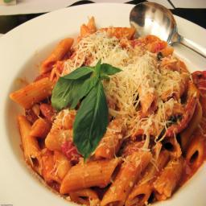

What's for lunch? I don't know
Mitchell Schuldinger
Today has been a super super busy day, and I don't have much time
or any food to make lunch. Yet again I am going to sift through
my pantries and see what I can make.
After a bit of searching I found:
- 1/2 lb ziplock bag of uncooked, seasoned, hamburger meat
- A handfull of gluten free penne pasta noodles
- A half jar of vodka sauce
- A quarter of an onion
- A few bulbs of garlic
Yes, I know I had pasta for dinner last night, but I am broke
and this is what I got. Let's try to make something out of nothing.
To start I put the seasoned hamburger meat in a skillet and
started to cook it. While that was browning I brought a small
saucepan of water to a boil and added in the pasta. I let the
pasta cook for about 10 minutes, then drained it and set it aside.
I diced the onion and minced the garlic and added it to the skillet
with the meat. I let the meat and onion cook for about 5 minutes.
Then I added in the rest of the jar of the vodka sauce and let it
simmer for 5 more minutes. Lastly I added in the pasta, mixed
it around and put it into a bowl. Topped with with some parm and
called it a day.
We'll call this dish, with the help of Duolingo,
Penne alla vodka con carne
This was actually way better than expected, I give this one a
rating of 7/10.
This is not the actual dish I made. Thank google for this one.
Time to clean up.